PartDesign Bearingholder Tutorial II/fr
| Topic |
|---|
| Modélisation |
| Level |
| Utilisateur expérimenté |
| Time to complete |
| Authors |
| NormandC |
| FreeCAD version |
| ≥ 0.19.23300 |
| Example files |
| See also |
| None |
L'objectif en deux mots
Le but de ce tutoriel est de vous présenter deux flux de travail différents pour créer une pièce moulée avec des ébauches et des congés. Selon les autres programmes de CAO que vous avez utilisés, l'un ou l'autre peut vous être familier. Comme exemple de travail, nous allons modéliser un simple support de roulement.
C'est la deuxième partie du tutoriel. Il utilisera ce qu'on pourrait appeler le flux de travail « corps multiples », en utilisant la (simple) partie supérieure du support comme exemple.
Évidemment, pour suivre ce tutoriel, vous devez activer l'atelier PartDesign.
{kind=link}
Tutoriel sur les supports de roulement. Support de roulement terminé (partie haute)
Les données de conception
Le support doit être en mesure de tenir un Roulement d'un diamètre de 90mm avec une largeur allant jusqu'à 33mm (par exemple DIN 630 Type 2308, qui a un diamètre intérieur de 40 mm). Le palier nécessite une hauteur d'épaulement d'au moins 4,5 mm dans le support (et sur l'arbre). La partie supérieure du support sera boulonné sur le fond avec deux boulons de 12mm. Pour la tête d'un tel boulon, il faudra au moins 20 mm de diamètre d'espace libre. Il devrait y avoir une rainure sur les deux côtés du roulement capables de tenir un arbre standard bague d'étanchéité DIN 3760 : 38x55x7 40x55x7 ou sur un côté, 50x68x8 de l'autre côté.
Le support sera réalisé dans un moule en sable avec une épaisseur minimale de paroi de 5 mm, un angle de dépouille de 2 degrés, et un rayon de congé minimum de 3mm.
Configuration de la géométrie de l'ossature
{kind=link}
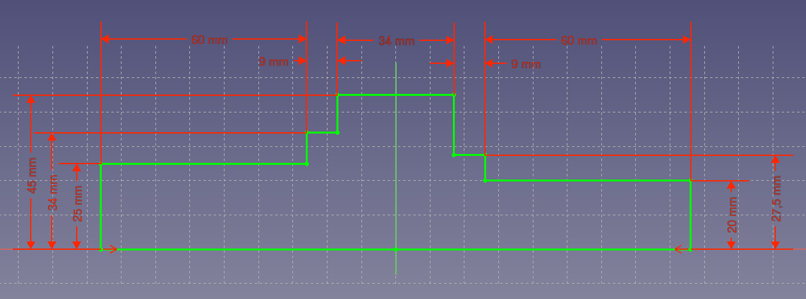
Créer une nouvelle pièce dans l'atelier de Conception de Pièce. Renommez le Corps qui est créé par défaut pour l'Ossature. Cet organe est probablement déjà activé, vous pouvez voir par la couleur de fond bleu dans l'arborescence. Créer une nouvelle esquisse sur le plan YZ contenant le contour de l'arbre, du roulements et bagues d'étanchéité. Après avoir terminé l'esquisse, faites une fonction de révolution de celle-ci. Cette fonction squelette sera ensuite utilisé pour référencer la géométrie réelle à celle-ci. Cela signifie que si vous souhaitez modifier les dimensions, tout ce que vous devez faire est d'ajuster les dimensions de la fonction squelette et le reste de la pièce se mettra à jour en conséquence.
{kind=link}
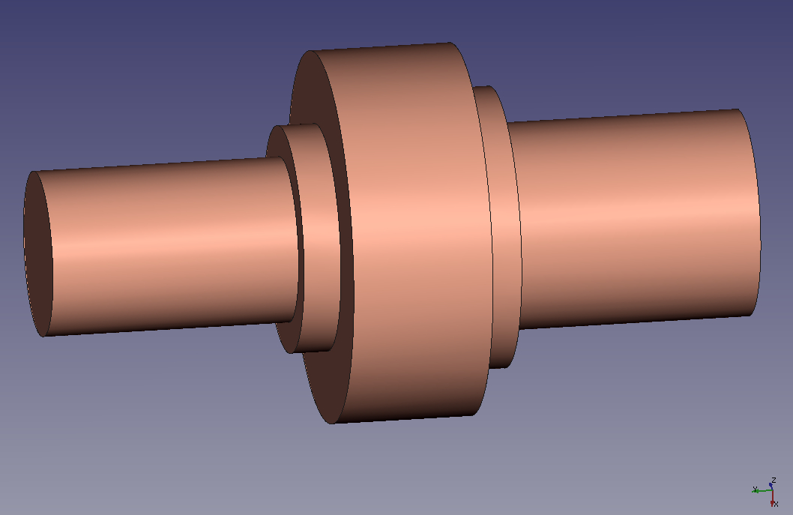
Le corps principal
{kind=link}
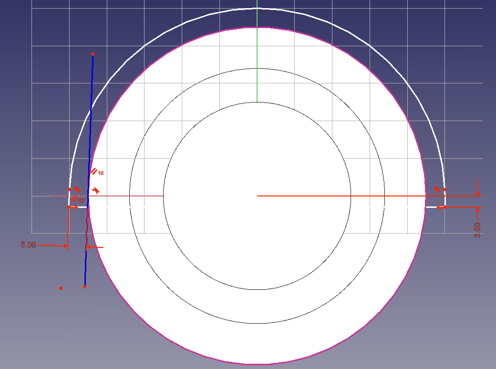
Créer un nouveau corps et le rendre actif. L'esquisse pour la première protrusion est affichée sur la droite. Elle est placée sur un plan de référence avec un décalage de 5 mm (épaisseur de paroi) de la face de l'ossature marquant le côté de l'une des bagues d'étanchéité du roulement. Parce que toutes les dimensions importantes sont prises à partir du squelette, il y a seulement trois dimensions: La surépaisseur d'usinage (3mm) à la base comme un décalage du plan XY, l'épaisseur de paroi de 5 mm de diamètre extérieur du squelette, et les deux angle de dépouille. Pour créer la dimension 5mm, vous devez d'abord sélectionner le cercle extérieur (rayon 45mm) de la géométrie de l'ossature comme la géométrie externe dans l'esquisse, puis mettez une ligne de construction contrainte tangentiellement à ce cercle et avec un angle de deux degrés.
Vous vous demandez probablement pourquoi il y a ce petit segment de droite au bas de chaque arc. Ce segment indique qu'il y aura un angle de deux degrés sur les arcs. Cela pourrait ressembler à beaucoup de travail pour un très petit avantage, mais de nombreux programmes de CAO (et peut-être un jour FreeCAD) disposent d'outils qui mettent en évidence un modèle solide en différentes couleurs immédiatement et vous présentent toutes les faces où l'angle de dépouille n'est pas correct. Vous ne voulez pas que cela arrive à votre modèle, en particulier après la mise en place d'un grand nombre de congés!
{kind=link}
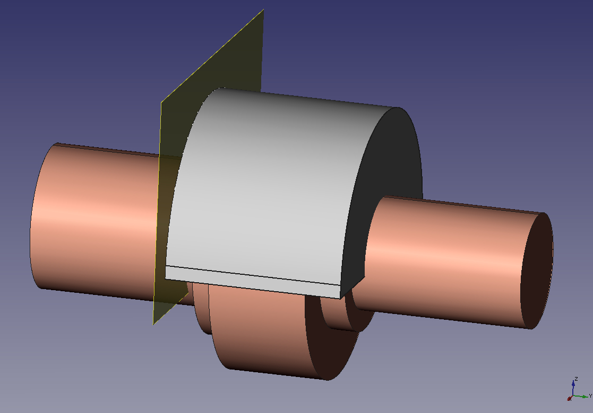
Quand vous avez fait l'esquisse (qui est un peu difficile à cause des deux degrés des lignes tangentielles), créer une protrusion de celle-ci s'étendant jusqu'à l'autre côté de la géométrie de l'ossature, à nouveau avec un décalage de 5 mm à la face latérale. Vous n'avez pas besoin de créer un plan de référence cette fois, le mode « jusqu'à la face » du dialogue de protrusion propose d'entrée un décalage.
{kind=link}
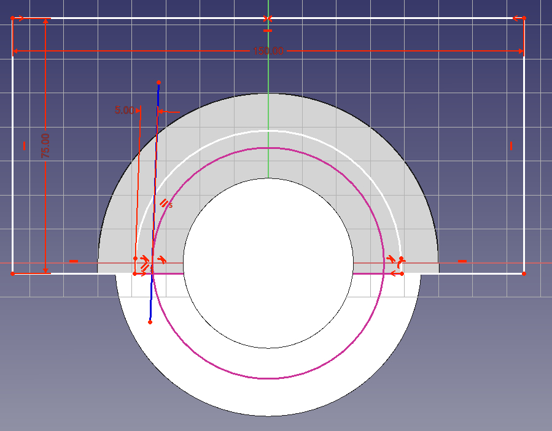
Ensuite, nous allons réduire la matière sur les deux extrémités de la protrusion car il est toujours idéal pour les pièces en fonte d'avoir une épaisseur de paroi aussi uniforme que possible. Créer une esquisse sur chacune des faces d'extrémité de la protrusion et dimensionner à 5 mm le décalage du cercle représentant la bague d'étanchéité du roulement (rayon de 27,5 mm d'un côté et 34mm sur l'autre). Pour le segment de la ligne de fond de l'esquisse, créer une autre géométrie externe de protrusion et la contraindre. Ainsi l'esquisse n'a qu'une seule dimension, l'épaisseur de paroi de 5 mm (les dimensions de 150mm et 75mm ne sont pas importants tant qu'ils sont assez grands pour s'assurer que tout est coupé).
{kind=link}
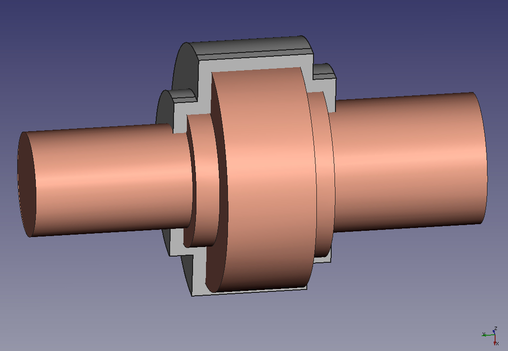
Utilisez l'esquisse que vous avez créée pour faire une cavité et l'étendre jusqu'à la face de la géométrie du squelette qui représente le palier, moins 5 mm pour compenser l'épaisseur de paroi. Pour la deuxième cavité, vous pouvez utiliser l'option « Dupliquer l'objet sélectionné » dans le menu d'édition pour reproduire l'esquisse que vous avez déjà fait (choisissez de ne pas reproduire les objets dépendants si la question apparaît). Ensuite, sélectionnez la face sur laquelle vous souhaitez déplacer cette esquisse, et de dire à FreeCAD de dessiner l'esquisse sur cette face (c'est un élément du menu PartDesign). Après la création de la deuxième cavité, vous pouvez regarder le résultat du fond pour vérifier que vous avez une épaisseur de paroi uniforme de 5 mm sur le contour de la géométrie du squelette.
{kind=link}
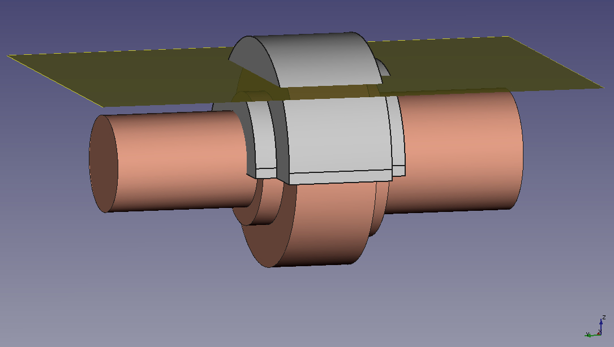
Maintenant, il est temps de créer le projet et les congés. Le projet nécessite un plan neutre, ce qui signifie que la géométrie qui est coupée par ce plan restera à sa place, tandis que le reste de la face est incliné de l'angle de dépouille. L'utilisation du fond de la protrusion à cette fin n'est pas une bonne idée, parce que l'épaisseur de la paroi dans la partie supérieure du support deviendrait inférieure à 5 mm. Donc nous créons un plan de référence décalé environ 35mm de XY à cet effet. Activez le squelette et créer le plan, parce que nous en aurons besoin pour appliquer le projet à d'autres organes, aussi.
{kind=link}
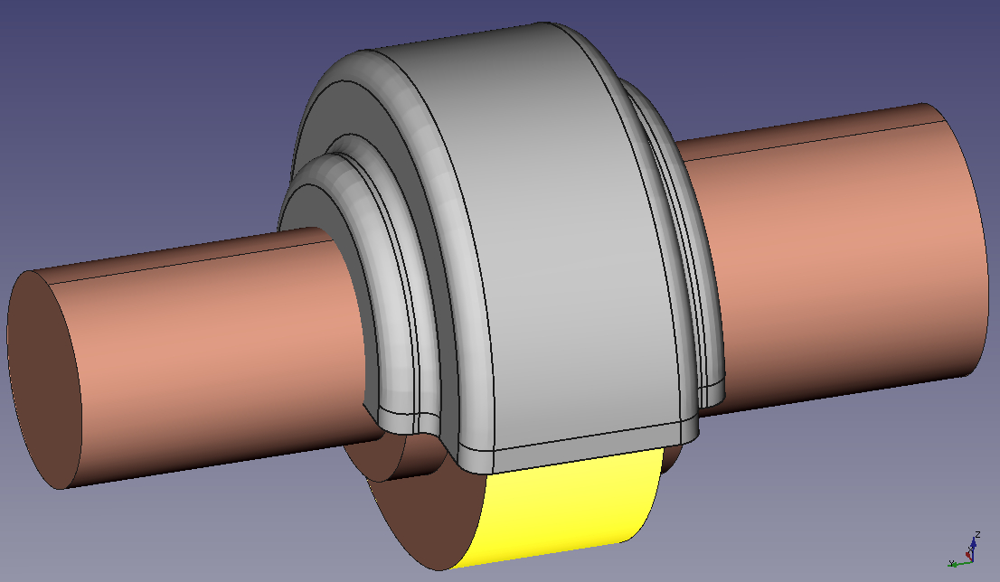
L'image de droite montre le premier corps fini avec dépouille et congés appliqués. On notera que les arêtes (concaves) extérieurs ont un rayon de congé plus large de 5 mm, de nouveau avec le but de créer une épaisseur de paroi plus uniforme (plus de 5 mm n'est pas possible, car alors, après usinage de l'intérieur du support l'épaisseur de paroi deviendrait inférieure à 5 mm).
Ajouter des corps pour les boulons
{kind=link}
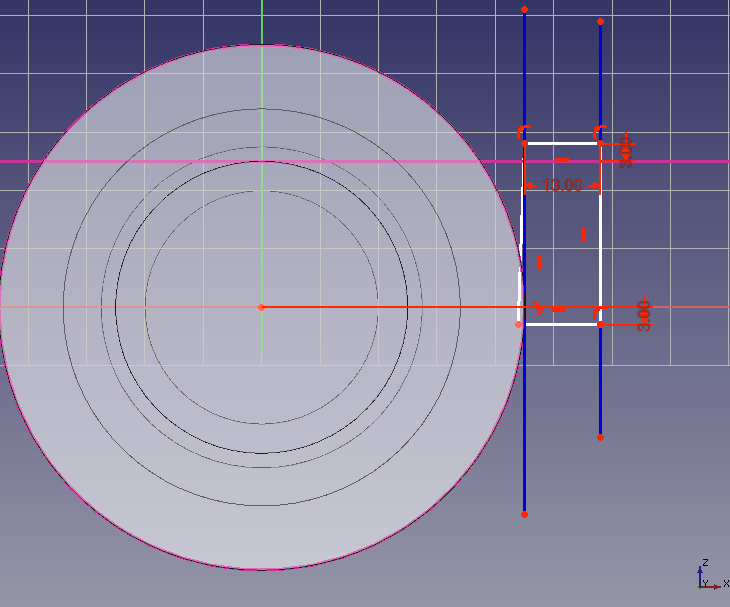
Les boulons doivent comporter deux corps cylindriques de part et d'autre du corps principal. Il est préférable d'inclure l'angle de dépouille de 2 degrés dans l'esquisse. J'ai essayé de créer un cylindre par rotation, puis d'appliquer une dépouille, mais j'ai constaté des anomalies après l'avoir mis en miroir et je n'ai pas pu y ajouter de congés, car la surface s'était déformée d'une manière ou d'une autre.
L'esquisse est dimensionnée de manière à ce que l'axe de rotation se trouve à 12 mm du diamètre extérieur du corps du squelette, soit 7 mm pour le rayon du trou plus 5 mm pour l'épaisseur de la paroi. Afin d'obtenir une pièce entièrement paramétrique, il est conseillé d'ajouter un plan au squelette à environ 25 mm au-dessus du plan XY pour marquer le haut des cylindres. Comme cette zone sera usinée, l'esquisse est cotée à 3 mm au-dessus de ce plan.
{kind=link}
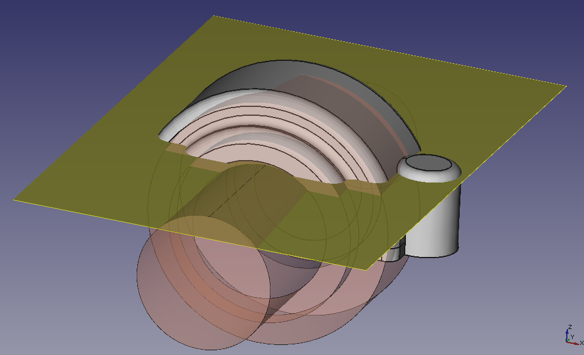
Créez une révolution de l'esquisse et appliquer un congé de 4mm vers le haut. Cela signifie que, après usinage et enlèvement de 3 mm, un léger rayon restera qui permet d'éviter une arête vive où quelqu'un pourrait se couper la main pour serrer la vis.
{kind=link}
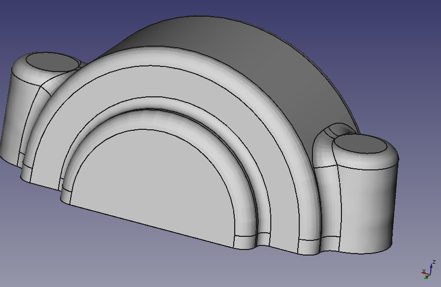
Créez une fonction booléenne pour fusionner le corps principal et le corps du boulon. Créez ensuite un nouveau corps pour l'autre côté. Dupliquez l'esquisse de révolution, déplacez-la vers ce corps et créez le deuxième corps pour les boulons (la fonction de symétrie d'un corps n'étant pas encore prise en charge, vous devrez refaire la majeure partie de l'opération). Fusionnez ensuite ce deuxième corps avec le corps principal. Enfin, appliquez un grand congé sur l'arête créée par l'opération de fusion booléenne. Le plus grand que j'ai pu obtenir était de 4 mm.
Vider le corps principal
{kind=link}
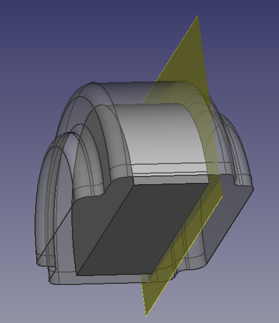
Nous allons maintenant travailler sur l'intérieur du support et le creuser afin de faire de la place pour le roulement et les bagues d'étanchéité. Ce faisant, nous devons bien sûr tenir compte de la marge d'usinage de 3 mm. Comme ce tutoriel porte sur la méthode multi-corps, nous allons créer la géométrie intérieure sous la forme d'un corps distinct, puis la découper dans le corps principal à l'aide d'une opération booléenne.
Créez un nouveau corps et activez-le. Tout d’abord, nous avons besoin d’un plan de référence décalé de 3 mm vers l’intérieur de la face du squelette qui montre le côté du roulement. Ensuite, dupliquez l’esquisse de la première protrusion du corps principal. Comme elle sera ajoutée au corps principal, cliquez dessus avec le bouton droit de la souris et choisissez de la déplacer vers le corps nouvellement créé (cette option n’est disponible dans le menu contextuel que si l’atelier PartDesign est actif). Mettez l'esquisse en correspondance avec le plan de référence (si l'esquisse se retrouve à l'envers après la mise en correspondance, déplacez le plan de référence de l'autre côté du roulement, à côté de l'emplacement de l'esquisse dupliquée). Modifiez maintenant l'esquisse de manière à ce que son diamètre soit inférieur de 3 mm au diamètre extérieur de la géométrie du squelette représentant le roulement. Il vous suffit pour cela de supprimer la cote de 5 mm, de faire glisser l'esquisse à l'intérieur du cercle de référence et de créer une nouvelle cote de 3 mm.
{kind=link}
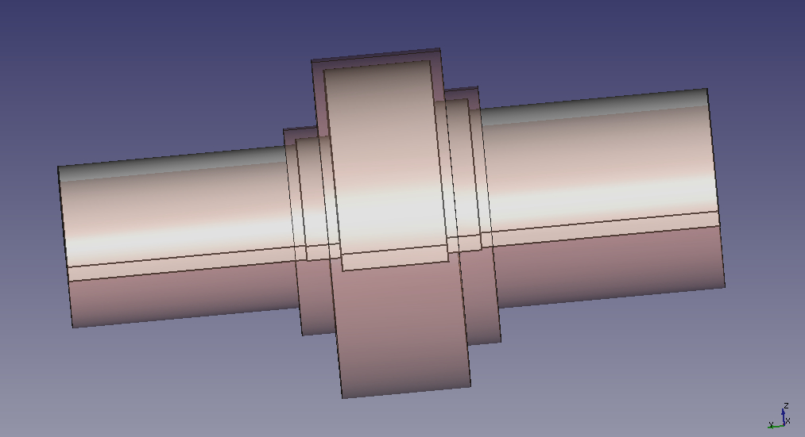
Ensuite, nous avons besoin de deux autres protrusions pour évider l’emplacement destiné aux bagues d’étanchéité. Dupliquez l’esquisse de la première protrusion du corps découpé et alignez-la sur le plan XZ. Modifiez l’esquisse et remplacez la référence externe par le diamètre extérieur de la bague d’étanchéité du roulement. Extrudez cette esquisse en la décalant de 3 mm par rapport à l'arête de la bague d’étanchéité. Répétez l’ensemble du processus pour la bague d’étanchéité située de l’autre côté.
Après cela, nous voulons créer deux autres protrusions comme les deux précédentes afin de laisser un jeu (par exemple 3 mm) entre l'arbre et le support.
{kind=link}
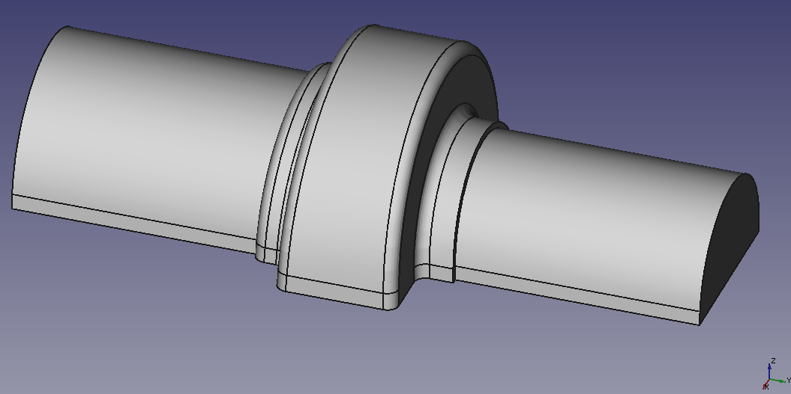
Il ne reste plus qu'à appliquer une dépouille aux faces latérales planes, en utilisant le même plan neutre que pour le corps principal, puis à réaliser des congés. Appliquez un congé général de 3 mm à toutes les arêtes. Vous remarquerez que plusieurs arêtes ne peuvent pas recevoir de congés… Il s'agit d'un défaut du noyau géométrique sous-jacent utilisé par FreeCAD.
{kind=link}
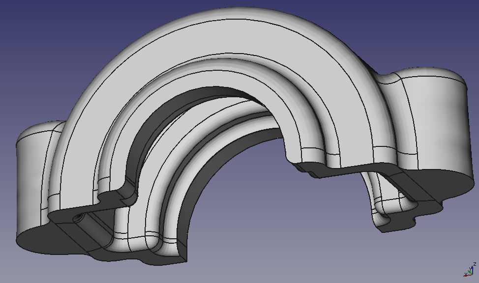
Nous sommes prêts à évider le corps principal. Sélectionnez-le, puis choisissez de créer une nouvelle opération booléenne. Ajoutez le corps évidé à la liste et choississez l'opération sur « Soustraction ». Appliquez un congé de 3 mm aux deux arêtes résultant de l'opération d'évidement (là encore, certaines arêtes ne peuvent pas recevoir de congés). Le résultat devrait ressembler à l'image de droite.
La pièce brute est maintenant terminée. C'est ce à quoi le support va ressembler avant l'usinage. A noter que puisque le moule aura une moitié supérieure et inférieure, l'arête entre les deux n'a pas de congé. Aussi, si vous donnez ce modèle à une fonderie assurez-vous de souligner qu'il a les dimensions après la coulée. La fonderie devra ensuite appliquer un certain pourcentage de retrait au modèle (faire le modèle numérique utilisé pour fabriquer le moule plus grand de sorte que lorsque le métal se refroidit et se contracte après la coulée, il aura la bonne taille).
Usinage
{kind=link}
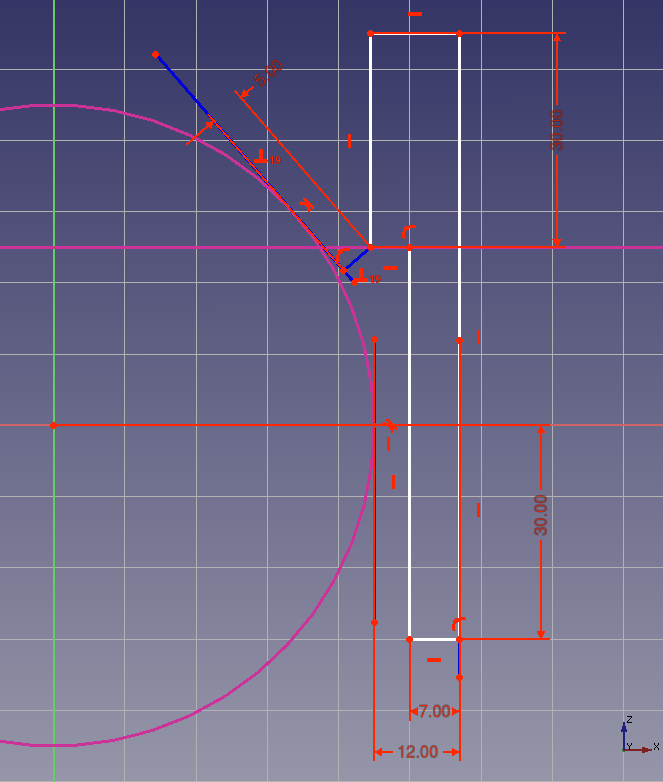
Pour enlever la matière nécessaire à l'usinage de l'intérieur du support, on peut très facilement utiliser le corps du squelette lui-même. Si vous ne souhaitez pas procéder ainsi, car le squelette se retrouve alors caché quelque part au fond de l'arborescence, vous pouvez également dupliquer l'esquisse de la fonction de révolution du squelette et recréer la révolution dans un autre corps. Cette méthode n'est toutefois pas entièrement paramétrique, car l'esquisse dupliquée est indépendante de l'originale ; vous devrez donc modifier les deux si vous changez une dimension. Les fonctions dupliquées dépendantes pourraient être prises en charge à l'avenir.
Pour la suite de l'usinage, créez un nouveau corps. La partie inférieure du support sera usinée à partir d'un « Pad » esquissé sur le plan XY et s'étendant vers le bas. Ensuite, esquissez une révolution pour réaliser un trou destiné aux boulons. Vous devrez esquisser sur le plan XZ et effectuer la révolution de manière à pouvoir choisir le diamètre extérieur du corps « squelette » comme référence externe. La partie supérieure de l'esquisse servira à usiner une surface plane destinée à accueillir la tête du boulon. Elle est cotée de manière à laisser une épaisseur de paroi d'au moins 5 mm dans le support. Si cela ne laisse pas suffisamment d'espace pour la tête du boulon, vous pouvez déplacer le plan de référence vers le haut. Bien sûr, vous pourriez intégrer cette logique dans le squelette, ce que nous laissons comme exercice au lecteur !
{kind=link}
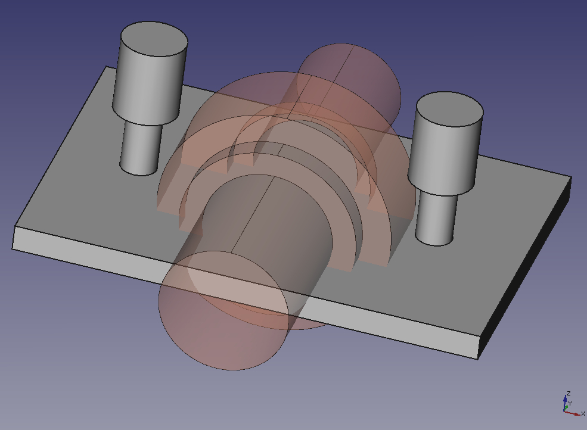
Vous pouvez mettre en miroir la révolution sur l'axe YZ. L'image de droite montre le corps « d'usinage ». Bien sûr, la plupart des dimensions des protrusions et des révolutions n'ont pas d'importance tant qu'il y a un chevauchement suffisant.
Enfin, créez une opération booléenne pour découper le corps à usiner du corps principal. Si vous souhaitez obtenir un bel effet visuel, vous pouvez colorer les surfaces usinées d'une couleur différente de celle du reste de la pièce. Cela constitue également un indicateur visuel utile qui vous permet de voir si vous avez oublié d'usiner un endroit.
Partie Une
PartDesign Tutoriel pour la conception d'un support de roulement (I)